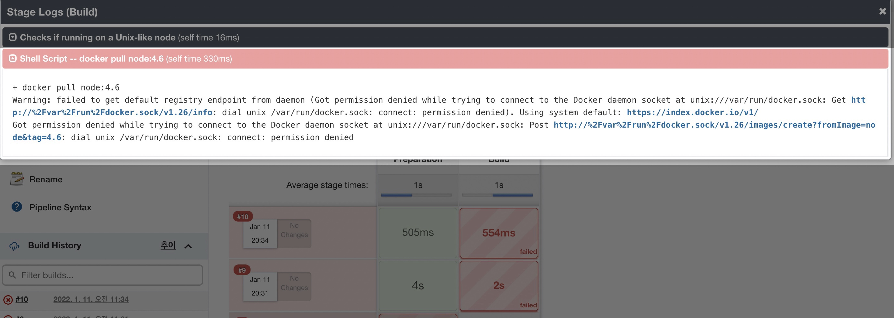
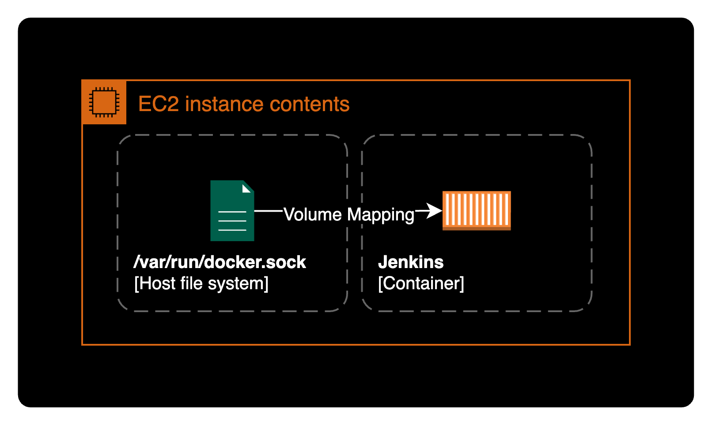
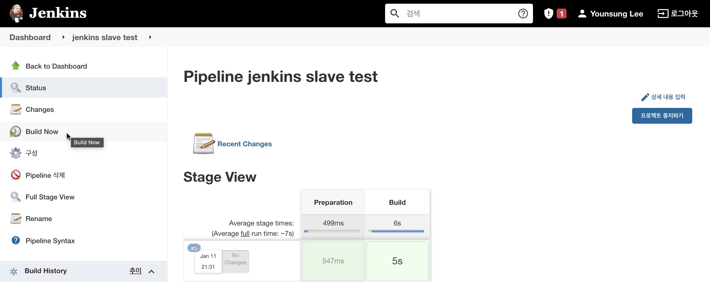
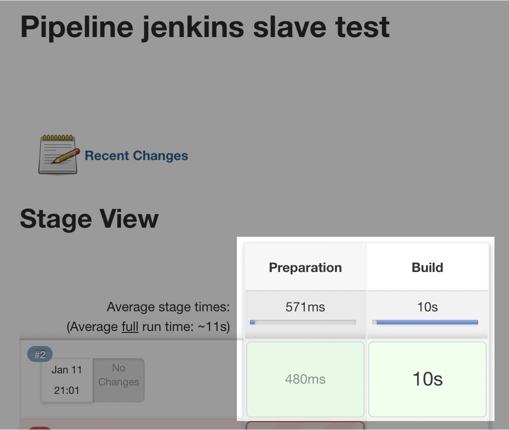

docker.sock 권한 거부 에러
증상
젠킨스 파이프라인
Jenkins 파이프라인 스크립트를 아래와 같이 작성한 후 파이프라인을 생성했습니다.
// Testing jenkins slave node
node(label: 'builder') {
stage('Preparation') {
git branch: 'main', url: '<https://github.com/seyslee/nodejs-with-docker-toyproj.git>'
}
stage('Build') {
def myTestContainer = docker.image('node:4.6')
myTestContainer.pull()
myTestContainer.inside() {
sh 'npm install'
}
}
}
테스트용으로 작성한 단순한 파이프라인입니다. 소스코드는 이 링크에서 확인할 수 있습니다.
파이프라인 동작순서
- builder 라벨이 붙은 Jenkins 노드에서만 실행한다. 참고로 이 코드는 Jenkins slave이 정상 동작하는지 테스트하기 위한 코드다.
- [Preparation 단계] 내 Docker 데모 레포지터리의 main branch를 Pull 한다.
- [Build 단계] docker 이미지
node:4.6를 빌드한다. - [Build 단계] docker 컨테이너 안에서
npm install명령어를 실행한다.
Jenkins 웹페이지에서 만든 파이프라인을 빌드를 돌려보니 docker를 사용하는 단계Stage에서 아래와 같은 에러 메세지가 출력됩니다.
dial unix /var/run/docker.sock: connect: permission denied
자세한 Stages Logs
아래는 젠킨스 파이프라인에서 확인한 에러 로그입니다.
+ docker pull node:4.6
Warning: failed to get default registry endpoint from daemon (Got permission denied while trying to connect to the Docker daemon socket at unix:///var/run/docker.sock: Get http://%2Fvar%2Frun%2Fdocker.sock/v1.26/info: dial unix /var/run/docker.sock: connect: permission denied). Using system default: <https://index.docker.io/v1/>
Got permission denied while trying to connect to the Docker daemon socket at unix:///var/run/docker.sock: Post http://%2Fvar%2Frun%2Fdocker.sock/v1.26/images/create?fromImage=node&tag=4.6: dial unix /var/run/docker.sock: connect: permission denied
Jenkins 에러 메세지 화면

docker.sock: conenct: permission denied 에러로 인해 제가 생성한 파이프라인을 제대로 빌드할 수 없는 상황입니다.
환경
호스트 환경정보
- OS : Ubuntu 20.04.3 LTS
- Shell : bash
- ID : root
- Docker : Docker version 20.10.12, build e91ed57
- Jenkins Server : Jenkins 2.319.1 (도커 컨테이너 형태로 배포됨)
호스트의 Docker 구성
$ docker ps
CONTAINER ID IMAGE COMMAND CREATED STATUS PORTS NAMES
170a33da3a09 wardviaene/jenkins-slave "/entrypoint.sh" 2 hours ago Up 2 hours 0.0.0.0:2222->22/tcp, :::2222->22/tcp suspicious_goldstine
현재 내 경우는 호스트 서버에 jenkins를 docker 컨테이너 형태로 띄워서 사용중입니다.
$ docker run \
-p 2222:22 \
-v /var/jenkins_home:/var/jenkins_home \
-v /var/run/docker.sock:/var/run/docker.sock \
-d wardviaene/jenkins-slave \
--restart always
볼륨 매핑 옵션-v을 통해서 호스트 서버의 /var/run/docker.sock 파일을 컨테이너에 공유해서 같은 파일을 참조합니다.

호스트 서버에서 /var/run/docker.sock 파일을 확인합니다.
$ ls -lh /var/run/docker.sock
srw-rw---- 1 root systemd-coredump 0 Jan 11 10:35 /var/run/docker.sock
현재 제 구성은 이 docker.sock 파일을 젠킨스 컨테이너와 공유하도록 볼륨 매핑되어 있습니다.
원인
제 경우 호스트 서버의 docker.sock 파일을 컨테이너와 공유해서 사용하는 환경입니다.
이 때 jenkins 컨테이너가 사용하는 docker.sock 파일의 그룹 권한 설정이 잘못되어 있어서 해당 파일을 사용하지 못했습니다.
해결방법
컨테이너 내부의 /var/run/docker.sock 파일에 알맞은 그룹 권한 docker을 부여합니다.
상세 해결방법
호스트 서버
Jenkins 컨테이너를 구동중인 호스트 서버에 SSH 등을 통해 원격접속합니다.
컨테이너 목록을 확인합니다.
$ docker ps
CONTAINER ID IMAGE COMMAND CREATED STATUS PORTS NAMES
170a33da3a09 wardviaene/jenkins-slave "/entrypoint.sh" 2 hours ago Up 2 hours 0.0.0.0:2222->22/tcp, :::2222->22/tcp suspicious_goldstine
현재 구성은 호스트 서버 위에서 jenkins가 컨테이너 형태로 운영중인 구성입니다.
컨테이너 ID를 확인한 후 jenkins 컨테이너에 bash 쉘로 접속합니다.
$ docker exec -it 170a33da3a09 bash
Jenkins 컨테이너 내부
젠킨스 컨테이너 내부로 들어왔습니다. 현재 로그인된 ID를 확인합니다.
$ id
uid=0(root) gid=0(root) groups=0(root)
현재 Jenkins 컨테이너의 root 계정입니다.
컨테이너 내부에서 docker.sock 파일이 있는지와 권한 설정 상태를 확인합니다.
$ ls -al /var/run/
total 20
drwxr-xr-x 1 root root 4096 Jan 11 10:36 .
drwxr-xr-x 1 root root 4096 Jan 11 10:36 ..
srw-rw---- 1 root 998 0 Jan 11 10:35 docker.sock
drwxrwxrwt 2 root root 4096 May 8 2017 lock
drwxr-xr-x 2 root root 4096 Jun 9 2017 sshd
-rw-r--r-- 1 root root 4 Jan 11 10:36 sshd.pid
-rw-rw-r-- 1 root utmp 0 May 8 2017 utmp
docker.sock 파일의 그룹 권한이 이름이 없고 GID 998로 설정되어 있습니다.
srw-rw---- 1 root 998 0 Jan 11 10:35 docker.sock
~~~
GID (Group ID)
컨테이너에 접속한 상태에서 그룹 설정파일인 /etc/group을 확인합니다.
$ cat /etc/group | grep 998
$ # 명령어 결과가 출력되지 않을 경우
$ # 컨테이너에 998번 그룹이 없다는 의미입니다.
컨테이너 내부에서 GID 998에 해당하는 Group이 없기 때문에 그룹 이름이 아닌 998로만 표시되고 있습니다.
$ cat /etc/group | grep docker
docker:x:999:jenkins
컨테이너의 기준에서 jenkins 유저가 속해있는 docker 그룹의 GID는 999입니다.
컨테이너 내부에 위치한 docker.sock 파일의 그룹 권한이 잘못 설정되어 있습니다.
/var/run/docker.sock 파일의 소유 그룹을 docker로 다시 설정합니다.
$ sudo chown root:docker /var/run/docker.sock
bash: sudo: command not found
sudo 명령어가 존재하지 않는 컨테이너도 있으니 당황하지 않도록 합니다.
docker.sock 파일의 소유자 권한을 root, 소유 그룹을 docker로 변경합니다.
$ chown root:docker /var/run/docker.sock
$ ls -lh /var/run/
total 12K
srw-rw---- 1 root docker 0 Jan 11 10:35 docker.sock
drwxrwxrwt 2 root root 4.0K May 8 2017 lock
drwxr-xr-x 2 root root 4.0K Jun 9 2017 sshd
-rw-r--r-- 1 root root 4 Jan 11 10:36 sshd.pid
-rw-rw-r-- 1 root utmp 0 May 8 2017 utmp
docker.sock 파일의 그룹 권한이 998에서 docker로 변경되었습니다.
도커 소켓파일의 권한설정을 완료했습니다.
이제 파이프라인을 다시 실행하기 위해 Jenkins 웹페이지로 돌아갑니다.

Build Now 버튼을 클릭해서 처음에 build 실패한 Pipeline을 다시 빌드합니다.
컨테이너의 docker.sock 파일의 소유 그룹을 docker 로 변경한 후에는 파이프라인 빌드가 정상적으로 완료됩니다.

젠킨스 파이프라인의 실행 로그도 확인합니다.
...
[Pipeline] // stage
[Pipeline] stage
[Pipeline] { (Build)
[Pipeline] isUnix
[Pipeline] sh
+ docker pull node:4.6
4.6: Pulling from library/node
Digest: sha256:a1cc6d576734c331643f9c4e0e7f572430e8baf9756dc24dab11d87b34bd202e
Status: Image is up to date for node:4.6
[Pipeline] isUnix
[Pipeline] sh
...
[Pipeline] }
[Pipeline] // node
[Pipeline] End of Pipeline
Finished: SUCCESS
Jenkins 빌드 로그에서 볼 때도 문제가 발생했던 docker pull node:4.6 부분에서도 정상적으로 이미지를 가져옵니다.
결론
dial unix /var/run/docker.sock: connect: permission denied 에러가 발생할 경우, docker.sock 파일의 소유자 권한, 그룹 권한이 호스트와 컨테이너 모두 알맞게 설정되어 있는지 확인한다.